IEC 61375 TRDP protocol
Description of the IEC 61375 TRDP protocol implementation in the Typhoon HIL toolchain.
IEC 61375 TRDP protocol
The IEC 61375 (IEC 61375 – Train Real-Time Data Protocol [1]) standard specifies Train Communication Network for usage in railway vehicles (trains) mainly intended for the exchange of Train Control and Management system related information, among other applications. This protocol is used for information exchange between Ethernet Train Backbone Nodes connected by Ethernet.
The TRDP protocol has been defined as the standard communication protocol in IP-enabled trains. It allows communication via process data (periodically transmitted data using UDP/IP) and message data (client - server messaging using UDP/IP or TCP/IP).
TRDP is executed by a TRDP layer which is placed on top of the TCP/UDP transport layer. This layer may optionally be extended by a safety layer which provides secure end-to-end data transmission of the safety critical process data and message data between any two end devices in the network.
All TRDP data on wire is defined as big endian and byte alignment. Possible marshalling of user data needs to be done by a specific service primitive called from the application layer before calling the TRDP service primitives to send data. Additionally, a possible unmarshalling of user data needs to be done at application level after receiving data from the TRDP layer. An overview of the protocol stack is shown in Figure 1.
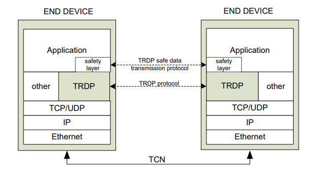
Typhoon HIL devices only support process data at this time.
Process Data
The TRDP process data protocol defines the exchange of PD-PDUs for the transfer of process data.
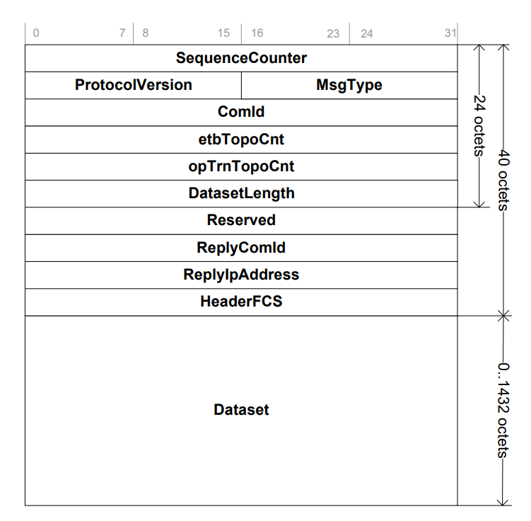
| Name | Type | Description |
|---|---|---|
| sequenceCounter | UINT32 | Message sequence counter |
| protocolVersion | VERSION | Protocol version |
| msgType | UINT16 | Type of the messge |
| comId | UINT32 | Communication identifier |
| etbTopoCnt | UINT32 | etbTopoCnt value |
| opTrnTopoCnt | UINT32 | opTrnTopoCnt value |
| datasetLength | UINT32 | Length of the array 'dataset' |
| reserved01 | UINT32 | Reserved for future user (=0) |
| replyComId | UINT32 | Requested communication identifier |
| replyIpAddress | UINT32 | Reply IP address |
| headerFcs | UINT32 | Header checksum |
| dataset | UINT8 [datasetLength] | User data set |
TRDP Configuration Database
<device attributes>
<device-configuration attributes/>
<bus-interface-list>
<bus-interface attributes>
<telegram attributes >
...
</telegram>
...
</bus-interface>
...
</bus-interface-list>
<com-parameter-list>
<com-parameter attributes/>
...
</com-parameter-list>
<data-set-list>
...
<data-set>
...
</data-set-list>
<debug attributes/>
</device>The XML structure above allows for message customization in the following ways:
- Device configuration can be used to initialize the TRDP stack of a device.
- Parameters given with the bus interface configuration can be used as parameters to initialize a specific TRDP session.
- Communication parameter information describes in which way the communication should take place. In most cases, one set of parameters is sufficient but it is possible to specify specific communication parameters for special situations.
- Data communication over the Ethernet Train Backbone is done with DataSets. A DataSet is a container of data items, similar to a structure in C language. A DataSet can be up to 1432 bytes long.
TRDP in the Typhoon HIL toolchain
TRDP is implemented in Typhoon HIL software by using the TCNOpen open source C library. It is supported by the following Typhoon HIL devices: HIL402, HIL101, HIL404, HIL602+, HIL604, HIL506, and HIL606.
TRDP communication includes two end devices: publisher and subscriber. They use UDP sockets to exchange information in the publisher to subscriber direction. TRDP subscriber binds to the socket, representing the role of the server in socket communication, while the publisher represents a client. It is important to note that the publisher has no means to know if the subscriber received the messages correctly.
One xml configuration file should be implemented on one schematic. There can be multiple TRDP publisher/subscriber components which use different interfaces, but these interfaces should be defined within the same xml configuration file.
Example models for both Publisher and Subscriber are located in Examples Explorer, and example configuration files are located in the accompanying \configuration_files subfolder.
TRDP Publisher
The TRDP Publisher component dialog window is shown in Table 2.
| component | component dialog window | component parameters |
|---|---|---|
|
TRDP Publisher |
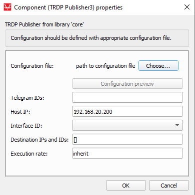 |
|
The TRDP Publisher component is configured by importing a file that describes the Publisher device. If the file is properly formatted, TRDP publisher data will be processed and all the extracted information regarding the Telegram com-ids, bus interface IP, bus interface IDs, as well as destination IPs and IDs that are defined in the .xml file will be parsed according to their respective properties in the component dialog window. You can use the combo box to select a possible interface ID, and based on this selected interface, you can choose which telegrams to publish. This is done either by adding/removing telegram IDs from a Telegram ID list and pressing the Update telegram IDs button or by selecting desired telegrams from the Configuration preview window shown in Table 3.
Figure 3 shows the TRDP Publisher dialog window after the configuration file has been loaded and all properties have been filled based on the .xml file.
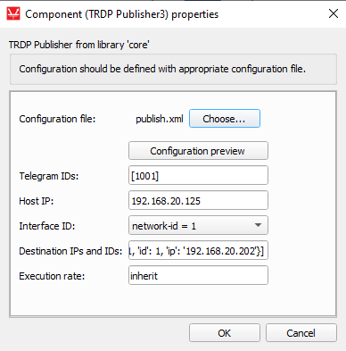
In the Telegram IDs property, telegram-com-ids are listed for the first bus interface. The list of telegram IDs can't contain com-ids of telegrams that are not defined in the xml configuration file. Some telegrams that are defined in the configuration file can be excluded, but the list has to have at least one telegram com-id.
Only one bus interface per TRDP Publisher can be published from; the IP of that interface is parsed to the Host IP property. You can change the IP so it differs from the one in the xml file without editing xml file and loading it again.
All bus interfaces from the configuration xml file are listed in the Interface ID combo box, where you can choose which interface to publish from.
- 'com-id' - com-id of referenced telegram
- 'id' - ID of destination, each destination that references the same telegram has a unique ID
- 'ip' - IP of end device to receive message
| Telegrams tab | Data sets tab | Bus interface tab |
|---|---|---|
|
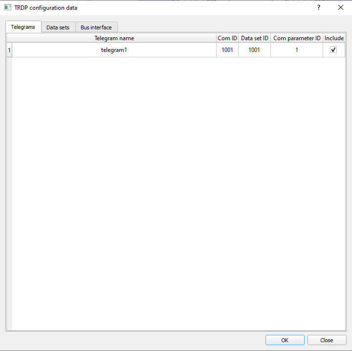 |
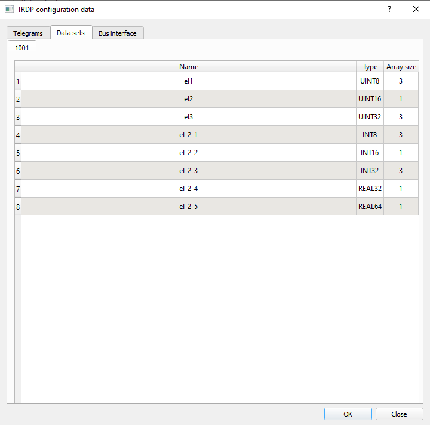 |
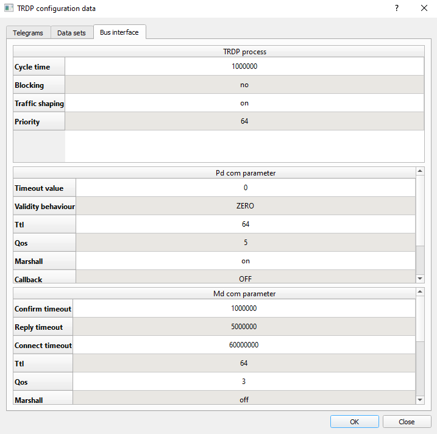 |
In the Telegrams tab, a table of possible telegrams is shown, based on the bus interface selected in the Interface ID property. It is possible to choose which telegram to publish by checking the "Include" button in the last column.
The Data sets tab describes the configuration of all datasets in xml configuration. Every dataset is described in its own tab, which is named by its dataset ID. Multiple telegrams can reference the same dataset.
The Bus interface tab shows the Bus interface configuration in three tables, each representing one attribute of the Bus interface tag in the xml configuration file.
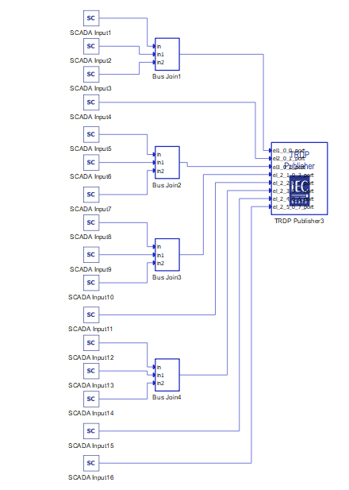
To successfully establish TRDP communication, all devices communicating through TRDP messages must be on the same network and subnet.
TRDP Subscriber
| component | component dialog window | component parameters |
|---|---|---|
|
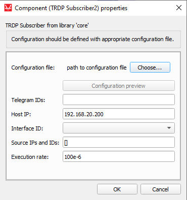 |
|
The TRDP Subscriber component is configured by importing a file that describes the Subscriber device. If the file is properly formatted, TRDP Subscriber data will be processed and all the extracted information regarding the Telegram com-ids, bus interface IP, bus interface IDs, as well as source IPs and IDs that are defined in the .xml file will be parsed according to their respective properties in the component dialog window. You can use the combo box to select a possible interface ID, and based on this selected interface, you can choose which telegrams to subscribe to. This is done either by adding/removing telegram IDs from a Telegram ID list and pressing the Update telegram IDs button or by selecting desired telegrams from the Configuration preview window shown in Table 5.
Figure 5 shows the TRDP Subscriber dialog window after the configuration file has been loaded and all properties have been filled based on the .xml file.
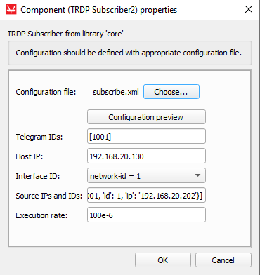
In the Telegram IDs property, telegram-com-ids are listed for the first bus interface. The list of telegram IDs can't contain com-ids of telegrams that are not defined in the xml configuration file. Some telegrams that are defined in the configuration file can be excluded, but the list has to have at least one telegram com-id.
Only one bus interface per TRDP Subscriber can be subscribed to; the IP of that interface is parsed to the Host IP property. You can change the IP so it differs from the one in the .xml file without editing the .xml file and loading it again.
All bus interfaces from the configuration xml file are listed in the Interface ID combo box, where you can choose which interface to subscribe from.
- 'com-id' - com-id of the referenced telegram
- 'id' - ID of source, each source that reference same telegram have unique ID
- 'ip' - IP of device that sends the message
| Telegrams tab | Data sets tab | Bus interface tab |
|---|---|---|
In the Telegrams tab, a table of possible telegrams is shown, based on the bus interface selected in the Interface ID property. It is possible to choose which telegram to subscribe to by checking the "Include" button in last column.
The Data sets tab, describes the configuration of all datasets in xml configuration. Every dataset is described in its own tab, which is named by its dataset ID. Multiple telegrams can reference the same dataset.
The Bus interface tab shows the Bus interface configuration in three tables, each representing one attribute of the Bus interface tag in the xml configuration file.
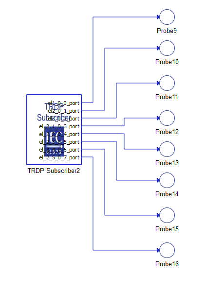
Virtual HIL support
Virtual HIL currently does not support this protocol. When using a non-real-time environment (e.g. when running the model on a local computer), inputs to this component will be discarded and outputs from this component will be zeroed.
References
- Institut za standardizaciju Srbije (ISS) "SRPS EN 61375-2-3:2016", 2016, pp. 124 - 136
- Institut za standardizaciju Srbije (ISS) "SRPS EN 61375-2-3:2016", 2016, pp. 195 - 214